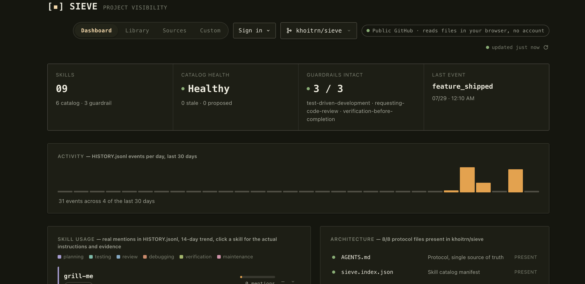

Sieve is a portable, file-based agent protocol and skill library. Install it in one command and it works the same across Claude Code, Codex, Cursor, and 20+ other agents — the durable layer stays in plain files you own, not locked into any one vendor.
Two short questions, then it pulls only the skills that fit from the registry — not the whole catalog. No registry reachable? It falls back to the full bundled set automatically.
Catalog health, activity, and skill usage — read straight from your repo's own
sieve.index.json and HISTORY.jsonl.
No account, no server, no telemetry.

Already ran init? Push it, then open
sieve.khoitrn.com
and point it at owner/repo — works for any public repo, no sign-in required.
A report, never a mutation — run it on a cadence and triage what it flags yourself.
Two short questions — new idea or existing project, any focus areas — then only the skills that fit get installed, plus the always-on guardrails. Not the whole catalog.
AGENTS.md is the single source of truth. sieve bridge
writes thin pointer files for Claude Code, Cursor, Copilot, Gemini CLI, and Windsurf —
you never maintain the same rules twice.
Planning, testing, review, debugging, verification, maintenance — every skill has a clear job, so the catalog stays legible as it grows.
Skills are proposed, validated, and promoted as real work surfaces them.
sieve check keeps the catalog honest over time.